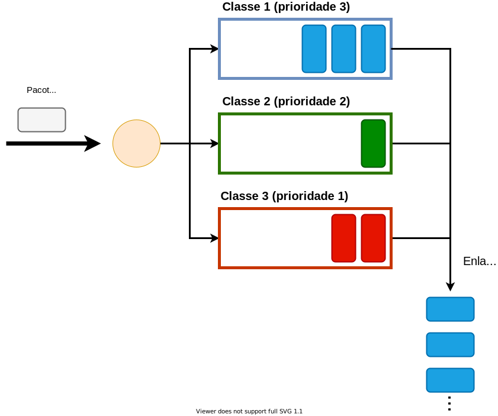
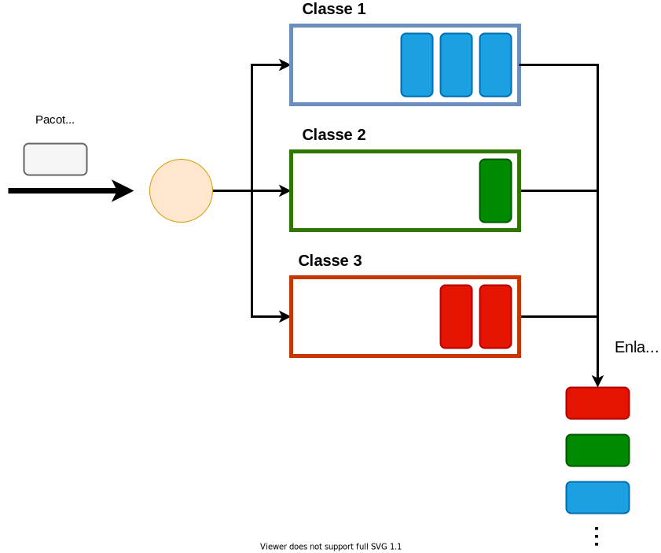
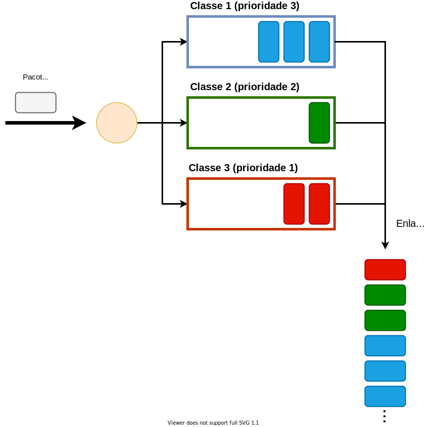

Como parte do processo de encaminhamento de um pacote por um roteador, é comum que o pacote precise ser enfileirado até que o enlace de saída se torne disponível para transmissão. De fato, roteadores na Internet estão a todo momento gerenciando as filas de pacotes associadas a cada um dos seus enlaces. Esse gerenciamento contempla duas tarefas básicas:
Embora haja opções óbvias para como escolher os pacotes em ambos os casos, essas escolhas nem sempre são as melhores possíveis. Além disso, a forma pela qual um roteador gerencia suas filas tem impacto representativo no desempenho e comportamento da rede. Isso é particularmente relevante quando tentamos fornecer algum nível específico de qualidade de serviço a um ou mais fluxos. Por esses motivos, nesse material cobriremos algumas possíveis políticas — também chamadas de disciplinas — de enfileiramento e discutiremos seus potenciais benefícios e problemas. Em particular, nos focaremos nas políticas de escalonamento e seus impactos em fluxos multimídia.
Normalmente, quando pensamos no gerenciamento de uma fila por um roteador, a política que naturalmente nos vem a mente é a FIFO (First-In First-Out). Em outras palavras, assumimos que os pacotes entram no final da fila e sempre o primeiro pacote da fila é escolhido para a próxima transmissão.
A política FIFO é, de fato, a mais comum e popular na Internet. Ela é simples e tende a dar oportunidades iguais a todos os pacotes, por respeitar a ordem na qual eles chegam ao roteador. Entretanto, em certas situações, o emprego de outras políticas de escalonamento pode trazer benefícios. Se temos, por exemplo, fluxos de melhor esforço (e.g., fluxos TCP relativos a aplicações de transferência de arquivos) competindo com fluxos de tempo-real (e.g., uma chamada VoIP), pode ser do interesse da rede que os pacotes da chamada VoIP “passem à frente” na fila. Do contrário, se o volume do tráfego de melhor esforço cresce, é possível que os fluxos de tempo real comecem a sofrer atrasos excessivos.
Para implementar este tipo de funcionalidade, é preciso que o roteador seja capaz de diferenciar os pacotes de acordo com seus fluxos ou, ao menos, em classes de importância. Neste caso, antes de chegar à fila propriamente dita, o pacote passa por um elemento chamado de classificador. Classificadores podem analisar uma série de características de cada pacote para classificá-los, como o protocolo de transporte, os números de porta e até outras propriedades, como tamanho. O fato é que uma vez classificados os pacotes, políticas de escalonamento cientes de prioridades podem ser utilizadas.
O exemplo mais simples de uma política deste tipo é a Priority Queueing. Esta política aloca buffers separados para cada classe, conforme exemplifica a figura abaixo:

Quando um pacote chega à fila ele é colocado no final do buffer da sua classe específica. Cada classe possui uma prioridade e, quando o próximo pacote a ser transmitido deve ser escolhido, a priority queueing percorre os buffers da classe de maior prioridade para a de menor prioridade: se houver um pacote no buffer da classe de maior prioridade, este é escolhido para transmissão; caso contrário, consulta-se o buffer da próxima classe com a maior prioridade entre as restantes.
No exemplo da figura acima, a fila da mais alta prioridade é a da classe 1. No instante ilustrado na figura, essa classe ainda possui pacotes na fila. Assim, na próxima oportunidade de transmissão, o primeiro pacote da fila da classe 1 será selecionado. De fato, como há três pacotes atualmente nessa fila, ao menos as três próximas oportunidades de transmissão serão dedicadas à classe 1. Por outro lado, se a fila dessa classe estivesse vazia, a próxima oportunidade seria dada ao primeiro pacote da fila da classe 2.
Nota-se, portanto, que, enquanto houver pacotes nos buffers das classes de maior prioridade, as classes de menor prioridade não serão servidas. Isso efetivamente atinge o efeito desejado de deixar certos pacotes “furarem fila”. Por outro lado, pacotes de mais baixa prioridade podem ser preteridos indefinidamente, uma situação chamada de starvation (esfomeação ou inanição em português).
O starvation pode ser combatido com outra política de escalonamento: a round-robin, ilustrada na figura abaixo:

Assim como na política priority queueing, pacotes são divididos em classes e cada classe possui seu próprio buffer. Quando o próximo pacote a ser transmitido precisa ser escolhido, a política Round-Robin percorre as filas em ordem, a partir da fila logo após aquela da qual o último pacote transmitido foi tirado. Em outras palavras, a cada nova oportunidade de transmissão, a política round-robin dá chance para uma nova classe e esse processo é repetido ciclicamente. Por exemplo, olhando para os últimos pacotes que foram transmitidos pelo enlace na figura acima, vemos que os três últimos foram, na ordem, os das classes 1, 2 e 3. Assim, na próxima oportunidade de transmissão, o Round-Robin buscará o primeiro pacote da fila da classe 1. Embora não seja o caso nesse exemplo, se a fila da classe 1 estivesse vazia, o Round-Robin daria a oportunidade para a classe 2.
Isso significa que todas as classes receberão serviço, independentemente do que ocorre nas demais. Embora a política round-robin não gere starvation, ela também não fornece nenhum tipo de prioridade a uma classe sobre outra — ao contrário, ela garante que os recursos dedicados a uma classe não interferirão com os recursos das demais classes, seja espaço em buffer, seja tempo de transmissão. Em particular, no caso do tempo de transmissão, cada classe recebe uma fração igual à das demais.
Uma política que consegue, simultaneamente, garantir priorização de classes e evitar starvation é a Weighted-Fair Queueing (ou WFQ). Um exemplo do uso dessa política é mostrado abaixo:

A WFQ atribui prioridades numéricas que são proporcionais à fração do tempo de utilização do enlace que será dedicada a cada classe. No exemplo, existem três classes com prioridades 3, 2 e 1. Classes de maior prioridade terão acesso a uma fração maior do tempo de uso do enlace. Por outro lado, classes de prioridade mais baixa ainda receberão alguma fração não-nula de tempo para utilizar o enlace, independentemente da ocupação dos buffers das classes de mais alta prioridade.
Uma forma de implementar1 a WFQ com pesos inteiros positivos é fazer uma ligeira alteração em como a política round-robin opera. Assim como na round-robin, as filas das várias classes são percorridas ciclicamente à medida que o enlace se torna disponível para transmissão. Entretanto, ao invés de transmitir um único pacote de uma classe e passar para a próxima, o WFQ transmite \(w\) pacotes da classe atual antes de passar para a seguinte, onde \(w\) é o valor do peso atribuído. Esse comportamento pode ser visto na figura, observando-se os últimos pacotes transmitidos pelo enlace: foram transmitidos três pacotes da classe 1 (de prioridade 3), dois pacotes da classe 2 (de prioridade 2) e um pacote da classe 3 (de prioridade 1).
Considerando o instante de tempo mostrado na figura e os estados atuais das filas, o próximo pacote selecionado para transmissão será o primeiro pacote da fila da classe 1, porque um ciclo completo foi encerrado nos últimos pacotes transmitidos. Na verdade, como a prioridade dessa classe é 3 e já há nesse instante três pacotes na fila, então os três próximos pacotes serão certamente selecionados dessa fila. Por outro lado, note que a próxima fila de mais alta prioridade — a fila da classe 2 — possui uma prioridade de 2. Mas no momento mostrado na figura, há apenas um pacote na fila. Se essa situação se mantiver por mais algum tempo, é possível que a fila fique vazia quando o WFQ tentar dar a segunda oportunidade de transmissão a essa classe. Nesse caso, ao invés de deixar o recurso — o enlace, nesse caso — ocioso, o WFQ passará para a próxima classe, assim como feito no Round-Robin.
Nessa implementação, uma classe \(A\) que tenha sido configurada com peso \(w_A\) receberá uma fração \(\frac{w_A}{W}\), onde \(W\) denota o somatório dos pesos de todas as classes. Essa capacidade de prover serviços diferenciados a cada classe de pacotes — em termos da reserva de uma fração configurável do tempo de transmissão (e, portanto, da banda) do enlace — ao mesmo tempo em que garante que fluxos não sofrerão esfomeação torna a WFQ uma opção bastante interessante para a configuração de políticas de qualidade de serviço em redes. De fato, é possível provar matematicamente que o uso do WFQ em conjunto com métodos de condicionamento de fluxos — como o token bucket — nos permitem garantir um atraso máximo fim-a-fim para cada pacote.
Nessa descrição, estamos fazendo uma simplificação implícita de que todos os pacotes são do mesmo tamanho e, portanto, levam o mesmo tempo para serem transmitidos. Em redes IP, isso não necessariamente é verdade. Assim, implementações práticas do WFQ geralmente se preocupam com a quantidade de bytes transmitidas, e não com o número de pacotes em si.↩︎